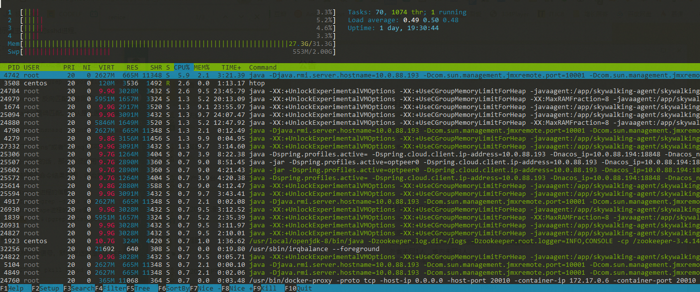
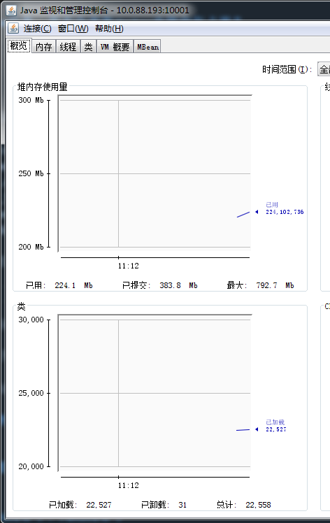

关于docker内jvm内存耗尽导致服务停机的问题解决
最开始的设置情况
jvm设置参数如下：
-XX:+UnlockExperimentalVMOptions -XX:+UseCGroupMemoryLimitForHeap -XX:MaxRAMFraction=8
在docker启动命令中设置。
但是由于jdk版本的变化，事情出现了严重的问题，-XX:MaxRAMFraction=8该配置不起作用！
测试环境现象
- 服务器假死，可以ping通，无法连接ssh
- 监控服务器日常使用，随日期和使用量导致内存上升
- 观察EXSI中的内存占用，近1小时内内存飙升
- 交换空间问题，重启后发现内存依旧在高位且交换空间占用率不低
预先考虑的解决方式
- 本地服务器java虚拟机的jvm设置，-xmx、-xms对docker的影响，包括docker设置启动项的问题
- 对docker直接写死镜像的内存信息，例如启动项中添加-XX:MaxRAMPercentage=75.0 -XX:MaxRAM=1000m（https://medium.com/adorsys/usecontainersupport-to-the-rescue-e77d6cfea712）
- 对docker基础镜像进行改造，使其镜像内部安装jmap、jstack、jsp等工具，能够直接对单个镜像进行排查获取内存信息。额外，对镜像进行改造，减少镜像体积！
- 更换docker镜像，尝试openj9等镜像（https://zhuanlan.zhihu.com/p/62652957），降低内存占用
- 对服务器添加内存，虚拟机扩容
排查手段
- top、htop、iostat等命令工具
- jvm内存排查：jmap、jstack等，dump内存看一下问题
- 可视化客户端工具：jconsole、jvisualvm
操作
0. 服务器重启后，查看/var/log/messages日志信息
没啥用，通过搜索并未发现有什么问题，这个日志记录还需要重新思考下如何进行监控。
1. 服务器重启后，对sshd进程进行优先级提升，保证死机时有足够空间操作ssh
建议使用 nice 命令或者renice命令将 sshd 进程的优先级调高，这样当系统内存紧张时，还能勉强登陆服务器进行调试，然后分析故障。操作如下：
// 找到该进程信息
$ ps -aux | grep sshd
// 展示下面的信息
root 2567 0.0 0.0 158936 5684 ? Ss 08:34 0:00 sshd: centos [priv]
centos 2601 0.0 0.0 158936 2452 ? S 08:35 0:00 sshd: centos@pts/0
root 2994 0.0 0.0 158936 5684 ? Ss 08:51 0:00 sshd: centos [priv]
centos 3000 0.0 0.0 158936 2452 ? S 08:51 0:00 sshd: centos@pts/1
centos 4474 0.0 0.0 112712 964 pts/1 S+ 09:36 0:00 grep --color=auto sshd
root 23773 0.0 0.0 112920 460 ? Ss Mar11 0:00 /usr/sbin/sshd -D
// 查看进程优先级
$ ps ax -o pid,nice,comm | grep sshd
2567 0 sshd
2601 0 sshd
2994 0 sshd
3000 0 sshd
23773 0 sshd
// 修改第一个进程的id信息，将优先级提升到最高
$ sudo renice -20 -p 23773
// 查看进程优先级
$ ps ax -o pid,nice,comm | grep sshd
2567 0 sshd
2601 0 sshd
2994 0 sshd
3000 0 sshd
23773 -20 sshd
// 退出后重新登录，再查看
$ ps aux | grep sshd
root 2567 0.0 0.0 158936 5684 ? Ss 08:34 0:00 sshd: centos [priv]
centos 2601 0.0 0.0 158936 2452 ? S 08:35 0:00 sshd: centos@pts/0
root 4944 0.5 0.0 158936 5684 ? S<s 09:40 0:00 sshd: centos [priv]
centos 4959 0.0 0.0 158936 2300 ? S< 09:41 0:00 sshd: centos@pts/1
centos 4997 0.0 0.0 112716 960 pts/1 S<+ 09:41 0:00 grep --color=auto sshd
root 23773 0.0 0.0 112920 460 ? S<s Mar11 0:00 /usr/sbin/sshd -D
$ ps ax -o pid,nice,comm | grep sshd
2567 0 sshd
2601 0 sshd
4944 -20 sshd
4959 -20 sshd
23773 -20 sshd可以看到的是sshd进程中，出现S<s，”<”代表高优先级进程标志，说明测试成功。
参考链接：
3. 重启之前的服务
这里使用的是docker来进行部署项目，由于之前的未进行详细的设置，导致这些镜像在系统重启的时候，不能自动重启镜像，所以需要对之前的镜像启动命令进行改造，添加–restart=always选项。
后续需要对镜像进行优化以及启动命令进行优化。
4. htop长期观察内存变化，测试人员正常进行功能测试
安装htop命令，手动观察内存变化。
$ sudo yum install -y psmisc
$ sudo yum install -y htop
// 使用htop命令
$ htop效果如下图：

在长期观察中，很明显的看到Mem部分占比非常高且Swp部分使用率不低，以此为根据怀疑是内存占用过高导致服务器死机。
服务器配置为4c32G，内存使用量在26G至30G之间，交换空间使用率在1/4左右，如果是走一个稍快的操作或者走一个轻量的压测会发现内存波动较大，交换空间上涨较快。
还可以看到java相关的进程在图中展示的MEM一列，大概占用在10%左右，在该服务器上一共部署了12个Java微服务，加上一个zookeeper，目前是13个微服务。单个微服务内存占比在10%左右，实际上一估算已经超出了现有内存，但是有部分服务未被调用，只会占用最低的内存量。所以可以维持现状，但是一旦开始使用，内存压力可想而知了，内存很容易被压爆。
5. 隔夜查看内存信息变化
经过隔夜对内存的观察，发现内存还是维持在高位，且交换空间有上涨。
4. 停止部分服务，查看内存占用
尝试停止部分服务，只维持核心的业务逻辑运转。撤掉两个用户相关服务，UMC和USER-UAA。尚待证实！
5. 使用jstack、jmap等命令进行dump操作
在使用这些命令的时候，发现并不能使用。
问题1：
[centos@localhost bin]$ sudo ./jstack -F 14299
[sudo] password for centos:
Attaching to process ID 14299, please wait...
Error attaching to process: Doesn't appear to be a HotSpot VM (could not find symbol "gHotSpotVMTypes" in remote process)
sun.jvm.hotspot.debugger.DebuggerException: Doesn't appear to be a HotSpot VM (could not find symbol "gHotSpotVMTypes" in remote process)
at sun.jvm.hotspot.HotSpotAgent.setupVM(HotSpotAgent.java:411)
at sun.jvm.hotspot.HotSpotAgent.go(HotSpotAgent.java:305)
at sun.jvm.hotspot.HotSpotAgent.attach(HotSpotAgent.java:140)
at sun.jvm.hotspot.tools.Tool.start(Tool.java:185)
at sun.jvm.hotspot.tools.Tool.execute(Tool.java:118)
at sun.jvm.hotspot.tools.JStack.main(JStack.java:92)
at sun.reflect.NativeMethodAccessorImpl.invoke0(Native Method)
at sun.reflect.NativeMethodAccessorImpl.invoke(NativeMethodAccessorImpl.java:62)
at sun.reflect.DelegatingMethodAccessorImpl.invoke(DelegatingMethodAccessorImpl.java:43)
at java.lang.reflect.Method.invoke(Method.java:498)
at sun.tools.jstack.JStack.runJStackTool(JStack.java:140)
at sun.tools.jstack.JStack.main(JStack.java:106)
[centos@localhost bin]$ java -version
java version "1.8.0_202"
Java(TM) SE Runtime Environment (build 1.8.0_202-b08)
Java HotSpot(TM) 64-Bit Server VM (build 25.202-b08, mixed mode)
[centos@localhost bin]$ docker exec -it a0c9 /bin/sh
/app # java -version
openjdk version "1.8.0_212"
OpenJDK Runtime Environment (IcedTea 3.12.0) (Alpine 8.212.04-r0)
OpenJDK 64-Bit Server VM (build 25.212-b04, mixed mode)两边java版本不对应，况且本地java版本过低。但是更改后还是不行，在查看时还是报错。
关于docker中进程pid为1时，无法操作jmap、jstack等jvm工具。怀疑docker镜像构建的问题，需要排查。
https://www.cqmaple.com/201905/docker-jvm-memory-limit.html
问题2：安装openjdk后找不到jmap等工具
yum install -y java-1.8.0-openjdk-devel
使用openjdk排查依旧不行，切换为root用户依旧不能操作。最后考虑要么更改基础镜像中的jdk信息，安装相关工具，要么使用jmx来进行监控。
解决方式：
- 对docker镜像进行改造，从只包含jre的镜像替换为具有完整的jdk镜像信息。
- 对docker内进程进行优化，使用tini来占据pid 1的进程，避免无法被监控的问题
参考链接：
5. 对单个服务进行监控，使用jconsole和jvisualvm
以业务建模为例子，改造其启动命令，添加jvm参数信息。原版的服务启动命令如下：
ENTRYPOINT ["sh", "-c", "java -XX:+UnlockExperimentalVMOptions -XX:+UseCGroupMemoryLimitForHeap -javaagent:/app/skywalking-agent/skywalking-agent.jar -Dskywalking.agent.namespace=${SKYWALKING_NAMESPACE} -Dskywalking.agent.service_name=${SKYWALKING_TARGET_SERVICE_NAME} -Dskywalking.collector.backend_service=${SKYWALKING_IP_PORT} -Dspring.profiles.active=${CHANNEL} -Dspring.cloud.client.ip-address=${IP_ADDR} -Dnacos_ip=${NACOS_IP} -Dnacos_namespace=${NACOS_NAMESPACE} -jar test-opt-visualmodel-0.0.1-SNAPSHOT.jar"]改造后的服务启动命令如下：
ENTRYPOINT ["sh", "-c", "java -Djava.rmi.server.hostname=192.168.232.193 -Dcom.sun.management.jmxremote.port=10001 -Dcom.sun.management.jmxremote.rmi.port=10001 -Dcom.sun.management.jmxremote.ssl=false -Dcom.sun.management.jmxremote.authenticate=false -XX:+UnlockExperimentalVMOptions -XX:+UseCGroupMemoryLimitForHeap -javaagent:/app/skywalking-agent/skywalking-agent.jar -Dskywalking.agent.namespace=${SKYWALKING_NAMESPACE} -Dskywalking.agent.service_name=${SKYWALKING_TARGET_SERVICE_NAME} -Dskywalking.collector.backend_service=${SKYWALKING_IP_PORT} -Dspring.profiles.active=${CHANNEL} -Dspring.cloud.client.ip-address=${IP_ADDR} -Dnacos_ip=${NACOS_IP} -Dnacos_namespace=${NACOS_NAMESPACE} -jar test-opt-visualmodel-0.0.1-SNAPSHOT.jar"]变化在于，设置了jmx的连接选项。解释如下：
- -Djava.rmi.server.hostname=192.168.232.193 jmx服务器所在地址信息
- -Dcom.sun.management.jmxremote.port=10001 jmx内部服务端口
- -Dcom.sun.management.jmxremote.rmi.port=10001 jmx对外暴露的服务端口
- -Dcom.sun.management.jmxremote.ssl=false 不使用ssl连接
- -Dcom.sun.management.jmxremote.authenticate=false 不添加授权信息
一定注意，在内网操作这些信息，不要在外网暴露，容易引起安全问题。
针对docker的启动命令需要修改为下面的信息，设置端口进行对应。如下：
docker run -d --restart=on-failure:10 -p 20020:20020 -p 10001:10001 -e SKYWALKING_NAMESPACE="test-test" -e SKYWALKING_TARGET_SERVICE_NAME="test-visualmodel" -e SKYWALKING_IP_PORT="192.168.232.163:11800" -e CHANNEL="standalone" -e IP_ADDR="192.168.232.193" -e NACOS_IP="192.168.232.194:18848" -e NACOS_NAMESPACE="aa853012-28dd-404a-a941-e4e36324f615" 192.168.232.159:5000/visualmodel-re:$BUILD_NUMBER主要是添加了“ -p 10001:10001 ”对应于该服务的jmx端口，设置对外暴露。
在本地先打开jconsole进行调试，填入连接信息，如下：

点击连接，查看内存信息。如下图：

这样就看到了单个服务提交了3.2G的内存分配请求，最大到7.5G，但是实际使用还不到500M。
问题发现，内存占比过高是因为宿主机的jvm的MaxRamFraction选项，默认为1/4内存，在设置了-XX:+UnlockExperimentalVMOptions -XX:+UseCGroupMemoryLimitForHeap两个选项后，并未设置镜像需要的内存信息，导致docker镜像还是去读取了宿主机的jvm设置，沿用了宿主机的jvm设置信息。
参考链接：
- https://blog.kelu.org/tech/2018/05/30/running-a-jvm-in-a-container-without-getting-killed.html
- https://www.li-rui.top/2019/08/22/docker/oracle-jdk8%E5%AE%B9%E5%99%A8%E8%B5%84%E6%BA%90%E9%99%90%E5%88%B6%E6%B5%8B%E8%AF%95/
- https://zhuanlan.zhihu.com/p/61408911https://zhuanlan.zhihu.com/p/61408911
如果更改宿主机的jvm信息，是否会改变docker中的内存占用？
尚未测试
最终的解决方式
针对docker镜像中的启动命令，添加*-XX:MaxRAMPercentage=85.0 -XX:MaxRAM=1000m选项，启动命令变为
java -XX:MaxRAMPercentage=85.0 -XX:MaxRAM=1000m -XX:+UnlockExperimentalVMOptions -XX:+UseCGroupMemoryLimitForHeap -javaagent:/app/skywalking-agent/skywalking-agent.jar -Dskywalking.agent.namespace=${SKYWALKING_NAMESPACE} -Dskywalking.agent.service_name=${SKYWALKING_TARGET_SERVICE_NAME} -Dskywalking.collector.backend_service=${SKYWALKING_IP_PORT} -Dspring.profiles.active=${CHANNEL} -Dspring.cloud.client.ip-address=${IP_ADDR} -Dnacos_ip=${NACOS_IP} -Dnacos_namespace=${NACOS_NAMESPACE} -jar test-opt-visualmodel-0.0.1-SNAPSHOT.jar”
表示将该镜像的最大内存占用限制在1000m，留有85%的内存给该微服务运行使用。设置后效果如下：

明显降低了内存占用，且服务基本不受影响，需要推广到其它服务进行测试。
改造Dockerfile，使用具有完整功能的jdk镜像，将基础镜像更改为OpenJ9或者Fabric镜像，进一步降低内存占用。
完善监控机制，保证无死角监控。
后续排查这类问题遵循由内到外、工具现行的理念。
番外：jenkins僵尸进程问题
起因：由于服务器挂掉，导致在构建中的任务无法连接目标服务器，导致该任务成为僵尸进程，无法操作。点击红色叉号并不能停止该构建。
操作方式：脚本方式删除，还有通过monitor插件进行删除，均无效。只有在上述操作过后，重新启动jenkins才能删除之前的僵尸进程！
脚本方式删除：
job = Jenkins.instance.getItemByFullName("test-visualmodel-peer0")
buildNum = job.getBuildByNumber(68)
buildNum.doStop()解决方式：针对产生僵尸进程的问题，通过设置ssh的超时时间解决。
jenkins重启链接：http://192.168.232.159:9090/restart
番外：提到的jvm配置选项的含义
待添加
关于Docker镜像的优化方式
待添加